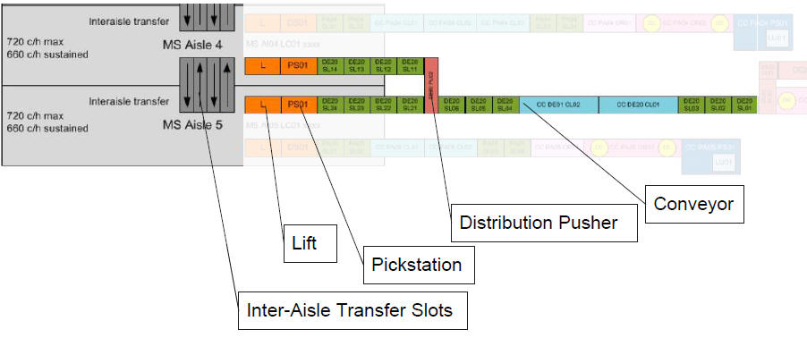

|
|
|
|

 |

|
|
It is an important characteristic of the AMCAP concept that the distribution of products across the aisles of the Multishuttle buffer is done during the storage process in order to be able to exploit the full throughput capacity of individual aisles during output due to the lack of inter-aisle sequencing requirements.
The current concept on the inbound side is bases on the combined usage of pushers for distribution across two aisles as well as inter-aisle transfer for final distribution.

In AMCAP installation Multishuttle Flex is used. In this chapter only the putaway strategies are described. For detailed on usage of slots in MS Flex see: SlotDetailDialog.
|
|
|
|
|
|
|
|
|
Step |
Description | Responsible |
|---|---|---|
| 1 | After passing the identification and measurement stations, the item is send to the "Distribution Pusher" (DP). |
PLC |
| 2 | Normally the DP works alternatively, e.g. one item to the first aisle and the second to the second one. But in case of lift lock the aisle with the locked lift is not considered. | MFC |
| 3 |
As soon the item is on the pick station in front of the lift, a destination request is triggered. |
MFC |
| 4 | LMS looks for a storage location and reserve this. At this position the final destination of the item is determined. | LMS |
| 5 | If inter aisle transfer is needed, this is handled by MFC. | MFC |
For details on step 4 and 5 see: AMCAPInventoryBalancing
|
|
|
|
During storing items in Multishuttle aisles, the order-related demand is considered. Therefore the orders are assigned to one or many aisles in advance. For details see: Order Allocation.
Following further restrictions are considered in order to find the destination location:
Following configuration is needed for the Multishuttle buffer area in "MS Putaway Level Strategy":
|
Strategy |
Weight | Description | ||
|---|---|---|---|---|
| Bin Multi Deep | 15 |
The weight is not used for weighting this strategy, but as soon it is greater than 0 this strategy is performed. Otherwise it is in-active. This strategy prefer a location within the allocated subgroup with free and unblocked positions storing load unit(s) with the same discriminating key. E.g. store the same items inside a level in the same location. |
||
| Subgroup transports | 10 | Prefer subgroups with lower number of currently planned inbound transports. | ||
| Fill Level | 5 | Prefer subgroups with lower fill level. | ||
| Height Classification | 3 |
Prefer subgroups with lower height.
|
||
| Interaisle Transfer | 2 | Prefer the subgroups that have currently less open inter aisle transfers |
|
INFO |
The above configuration is used in Techcenter Offenbach. For other projects this can be different. |
In order to fulfill the requirement (1) PLC waits for pairing and afterwards MFC requests for destination for a pair of packages.
For the requirement (2) the strategy "Inter-aisle Transfer" is configured. Thereby the level with the less iAT is used, which ensure to have iAT slots available.
The requirement (3) is handled as follow:
How are the distance and direction (right/left) determined?
The virtual locations of the area have sequence numbers. These are configured from 0 to #Aisles-1 (from right to left). As larger the different between current and target sequence number is (absolute), as long is the distance. Further the greater sequences than of the current aisle means left direction and with lower sequences means right direction.